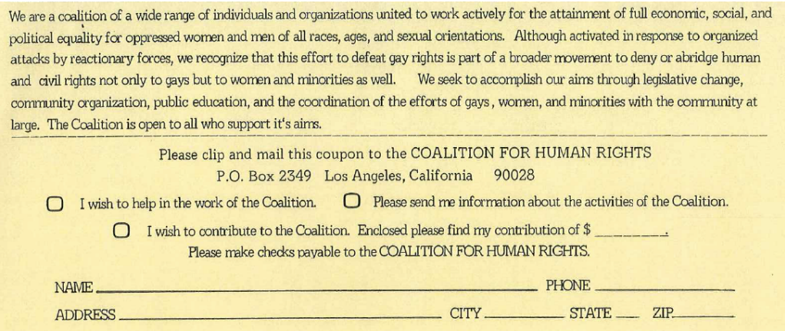
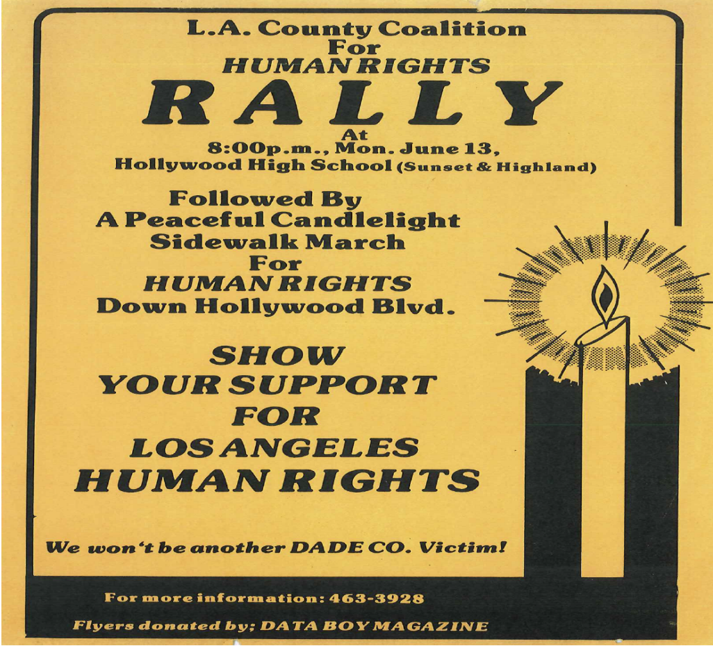
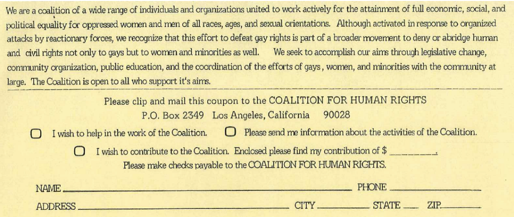
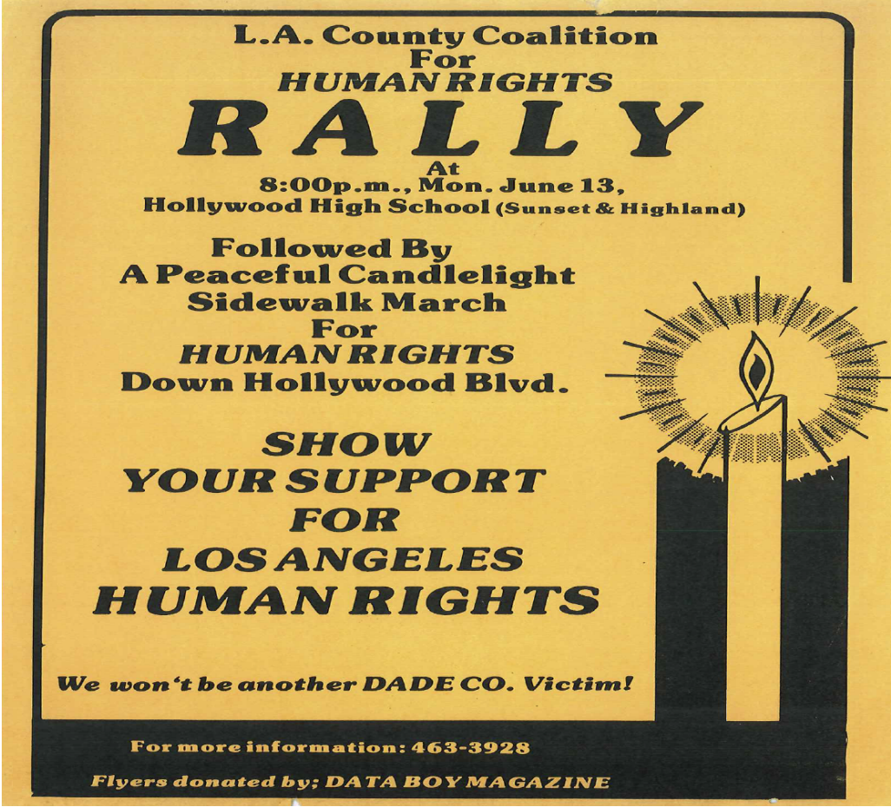

Think About:
1. What is the purpose of these pamphlets?
2. What was the goal of The Coalition for Human Rights/Los Angeles and what were some of the activities of this organization?
3. Based upon the information in these pamphlets, how was the movement for LGBTQ rights part of the broader movement for Civil Rights?
![Text 'The Coalition for Human Rights/Los Angeles Invites you to participate in a demonstration. Join the nationwide march for human rights at home! Doesn’t Jimmy Carter know that women’s rights and gay rights ARE human rights? Protect equal employment rights for gay teachers * End police harassment of gays, women, minorities and the poor in Hollywood and elsewhere * Free, elective abortions for the poor * Full equality for women/support the ERA * Get the metro squad out of Hollywood * Full custody rights for gay and lesbian partners * End the use of “Urban removal” to drive gays and others from their homes...Sat Aug 20th. March at 11:00 AM rally at 12:30 speakers and entertainment. NewFederalBldg in downtown L.A. The New Federal Building is at 300 North Los Angeles Street between Temple and Aliso Sts. The Coalition for Human Rights organizes peaceful and legal demonstrations, and we ask that all who march with us abide by that policy. For information, please call (213) 463-3928'](../images/LGBTQCivilRightsImages/pamphlet1.png)
 



Citation: Coalition for Human Rights, 1977-1985.